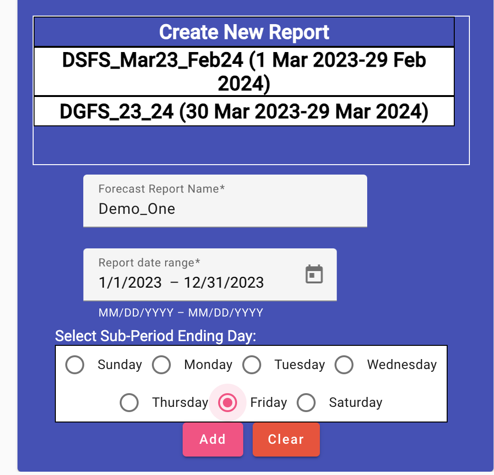
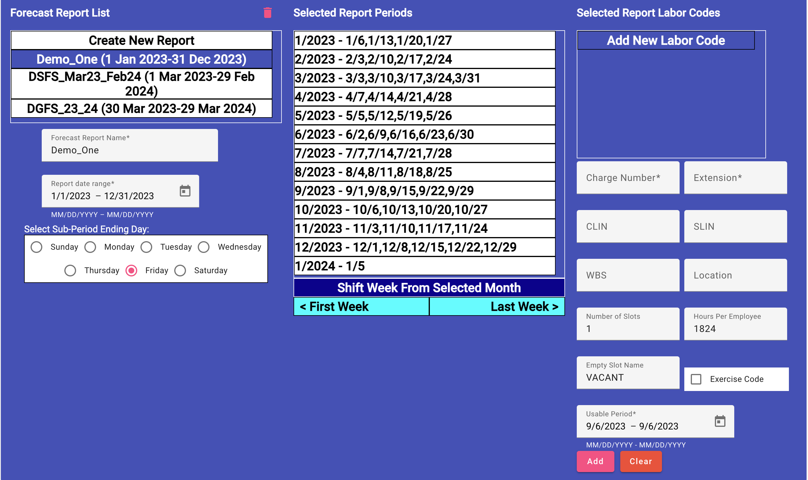
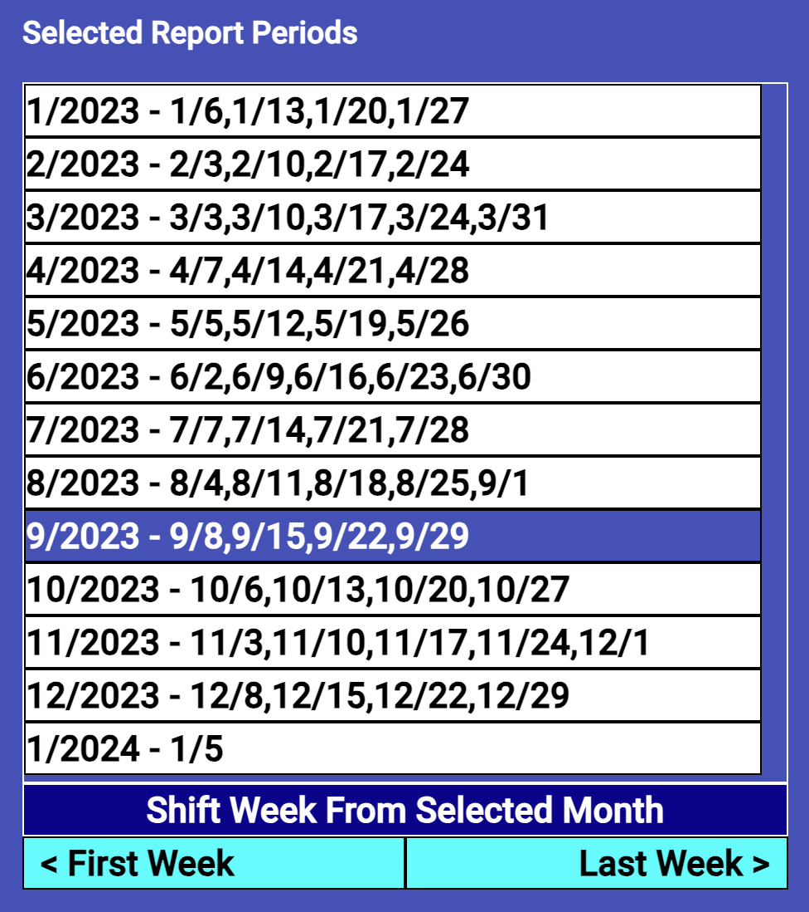
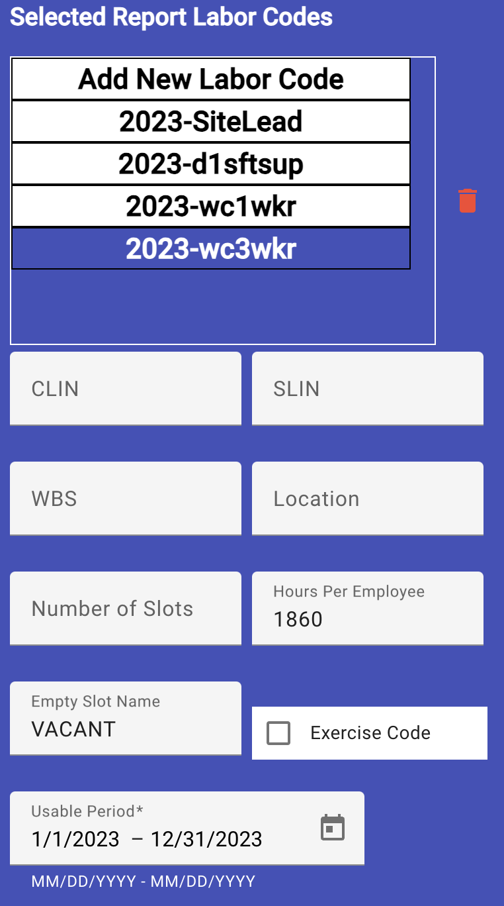

Site Forecast Report Editing
(Site Scheduler/Leadership only)
The forecast report is a excel-based output that allows the site
leadership to track contract accomplishment. Each contract for support
breaks up its accomplishment into periods of time with an allotted number
of hours per employee per function. Based on the scenario given 2 forecast
report elements need to be created for reporting accomplishment. These are
aligned with the contracts.
-
Getting the Forecast Report View
- Click the "Site Editor" menu choice on the left. This will open
the site editor view, normally in the basic site editing subview.
- Click the "Report Editor" tab at the top of the site editor view.
This will open the report editor subview, with the Site Forecast
Report Editor showing.

-
Create a New Forecast Report
-
Click the "Create New Report" item from the Forecast Report List.
This list shows only the forecast report elements that are active
(those with the current date between the report's date range) or
in the future. The "New Report" selection will show three areas for
entry.
- Type in the new forecast report element name, in this case we'll
use "Demo_One". Use underscore characters instead of spaces between
words. This will be used in the forecast report for the different
excel sheets (one each for actual hours and forecast hours).
-
Use the calendar icon to display the date calendar and click the first
date for the contract and a second click on the last day of the
contract. You will probably have to use the < and > buttons at
the top of the calendar to move the calendar to see the dates needed.
After the second click, the contract dates should be shown, if not, do
this step again.
-
Then, select which day of the week is used as the end of the reporting
week, this will normally be Friday, Saturday, or Sunday, but you can
choose any day of the week.
-
Lastly, click the "Add" button to create the basic forecast report
element. It will create weekly and monthly reporting periods for the
report. These can be adjusted later.

-
Adjusting the Report Periods
The reporting months will initial contain all the fridays for that
particular month, but the contract adminstrator may tell you that a week
should be in a different report month. For this scenario we are going to
move the first weeks in September and December to the previous month.
-
Click on the month initially containing the week to move (either
first or last Friday listed). In this case, we'll click on 12/2003.
- Click on the "< First Week" button to move the first of the selected
month's weeks to the previous month or the "> Last Week" button to
move the last of the selected month's weeks to the next month.
-
We would repeat this process for the other month to change.

-
Labor Codes
-
Add a New Labor Code
In our scenario for "Demo One", we need to add four (4) labor codes
for the site lead, 2 shift supervisor and worker for workcenters 1 and
3. The only required fields are the Charge Number, Extension, Number
of Slots, Hours per employee and the usable period. I'll use the site
lead's labor information for this sample.
- Click the "Add New Labor Code" item in the list.
- Type in the data for the Charge Number/Extension (2023 and
SiteLead) in the spaces provided.
-
Since the is to be only one site lead, the "Number of Slots" will
be one (1), but like the shift supervisors there are two (2) we
would ensure the Number of Slots is 2. You can either type in the
correct number or use the up/down arrows to adjust the value.
-
Type in the "Hours Per Employee" in the space provided. The
default is 1824 and this can be adjusted by using the up/down
arrows provided, but this can be time consuming.
-
The last required field is the "Usable Period". Click the
calendar icon to get a calendar to select the first day of the
period this Charge Number/Extension can be used, then the last.
This is normally the same as the contract period and will be set
that way by default, but for codes with shorted period this is
where they are set.
-
(Optional Fields - Normally provided by the contract
administrator)
- CLIN - Contract Line Number
- SLIN - (Probably) Supplemental Line Number
- WBS - Work Breakdown Structure
- Location
- Empty Slot Name - used in cases where a row in the
report is reserved if the number of employees is below the
number of slots.
- Exercise Code - this boolean value is provided in
cases where the code is for exercise support and a separate
section is provided in the final report. This is a Certificate
of Service report variable.
-
Lastly, you need to click the "Add" button at the bottom to add
the new labor code to the list.

-
Edit a Labor Code
- Select the Labor Code you wish to edit. You can't change its
charge number or extension, but the other fields are editable.
After selecting the labor code, its data will display in the
entry fields provided.
-
Make all the changes to the remaining fields, as necessary. All
changes are saved when you exit the field.
-
Delete a Labor Code
- Select the Labor Code you wish to remove from the list.
-
Click the red trash can to the right of the list to start the
deletion process.
-
A deletion verification dialog appears. Click the "Yes" to
complete the deletion or "No" to cancel the process.
-
Edit a Forecast Report
- Select the Forecast Report element from the Forecast Report List.
-
Make any changes to the report name, date range, ending day, periods and/or
labor codes associated with this report.
-
Delete a Forecast Report
-
Select the Forecast Report element from the Forecast Report List you
want to delete.
-
Click the red trash can above the Forecast Report List. This will
open a deletion verification dialog to ensure you want to delete the
report.
- Click the dialog's "Yes" button to complete the deletion or "No"
button to cancel the process.
Employee Leave Approval
Editing the Site Attributes